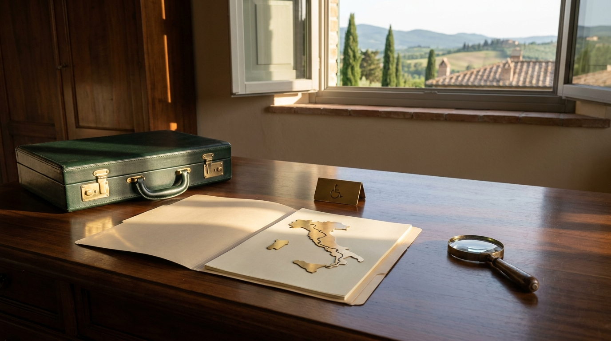

Legge 104 e trasferimento per assistere il familiare disabile: un diritto non assoluto
La Legge 104 consente al lavoratore di chiedere il trasferimento nella sede più vicina al familiare disabile da assistere. Ma il diritto non è incondizionato: va bilanciato con le esigenze organizzative del datore. La Cassazione precisa chi deve provare cosa, con effetti concreti per dipendenti e aziende, pubbliche e private.

Il caso e perché conta
Il lavoratore che assiste un familiare con disabilità grave può chiedere il trasferimento alla sede di lavoro più vicina al domicilio della persona assistita. È una tutela importante, ma sorge spesso una domanda: il datore di lavoro è sempre obbligato ad accoglierla?
La risposta della giurisprudenza è no. Il diritto esiste, ma non è assoluto. Va contemperato con le ragioni tecniche, organizzative e produttive dell'impresa o dell'amministrazione. La differenza tra un diritto pieno e un diritto condizionato cambia radicalmente l'esito di un contenzioso.
Inquadramento normativo
La norma di riferimento è l'art. 33, comma 5, della Legge 5 febbraio 1992, n. 104. Stabilisce che il lavoratore dipendente che assiste un familiare disabile in situazione di gravità (genitore, coniuge, parente o affine entro determinati gradi) ha diritto a scegliere, ove possibile, la sede di lavoro più vicina al domicilio della persona da assistere e non può essere trasferito senza il suo consenso ad altra sede.
L'inciso "ove possibile" è decisivo. La Corte di Cassazione, Sezione Lavoro, ha chiarito che il diritto alla scelta della sede non è incondizionato, ma soggetto a un bilanciamento con le esigenze economiche, produttive e organizzative del datore di lavoro. Le Sezioni Unite Civili, intervenute sul punto, hanno consolidato il principio: la tutela del disabile e di chi lo assiste è preminente, ma non può comprimere oltre misura l'organizzazione aziendale quando esistano oggettivi ostacoli.
Il profilo più rilevante è quello dell'onere della prova. Non spetta al lavoratore dimostrare che il trasferimento è possibile: è il datore di lavoro a dover provare l'esistenza di concrete e oggettive ragioni che impediscono l'accoglimento della richiesta. In assenza di tale prova, la domanda del dipendente deve essere accolta.
Implicazioni pratiche
Per il lavoratore, il diritto opera sia nel momento dell'assegnazione iniziale sia come limite al trasferimento successivo non consensuale. La condizione di gravità deve essere accertata ai sensi dell'art. 3, comma 3, della Legge 104, e l'assistenza deve essere effettiva, non meramente nominale.
Per il datore di lavoro, privato o pubblico, l'eventuale diniego non può essere generico. Affermare di non avere posti disponibili non basta: occorre dimostrare, con elementi concreti, l'indisponibilità di posizioni equivalenti nella sede richiesta o l'esistenza di impedimenti organizzativi reali.
Per l'amministrazione pubblica valgono gli stessi principi, con l'attenzione aggiuntiva ai vincoli di pianta organica e alle procedure di mobilità interna, che vanno comunque verificati e documentati.
Il punto pratico è che il contenzioso si gioca quasi sempre sul piano probatorio. Chi dispone di documentazione ordinata e tempestiva parte in posizione di forza.
Cosa fare in concreto
- Verifica i requisiti: accertati che la disabilità sia riconosciuta in situazione di gravità ex art. 3, comma 3, e che l'assistenza prestata sia effettiva e continuativa.
- Formalizza la richiesta per iscritto: indica la sede prescelta, il legame familiare, il domicilio dell'assistito e i riferimenti normativi, conservando prova della ricezione.
- Documenta l'assistenza: raccogli certificazioni, eventuali altri familiari potenzialmente obbligati e ogni elemento che dimostri l'esclusività o prevalenza del tuo ruolo.
- Datore di lavoro: motiva ogni diniego: se rifiuti, indica le specifiche ragioni organizzative e la prova della reale indisponibilità della sede, non formule generiche.
- Valuta la situazione prima di agire: consigliamo di far esaminare il singolo caso, perché l'esito dipende dal bilanciamento concreto tra le posizioni e dalla solidità della documentazione.
La Legge 104 offre una tutela sostanziale, ma il suo esercizio richiede precisione. Una richiesta ben costruita e una corretta gestione probatoria fanno spesso la differenza tra un diritto riconosciuto e un contenzioso evitabile.
---
Contributo informativo a cura di Tamburro & Partners - Avv. Giuseppe Tamburro. Non costituisce parere legale.
Ogni storia di lavoro ha i suoi tempi.
Se gestisci HR e vuoi un confronto su contenzioso, ispezioni o licenziamenti, scrivi allo studio. Ti rispondiamo entro un giorno lavorativo.